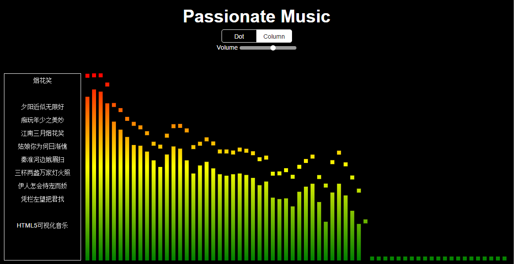
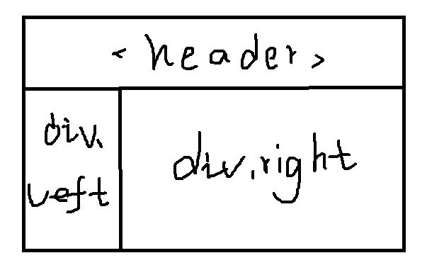
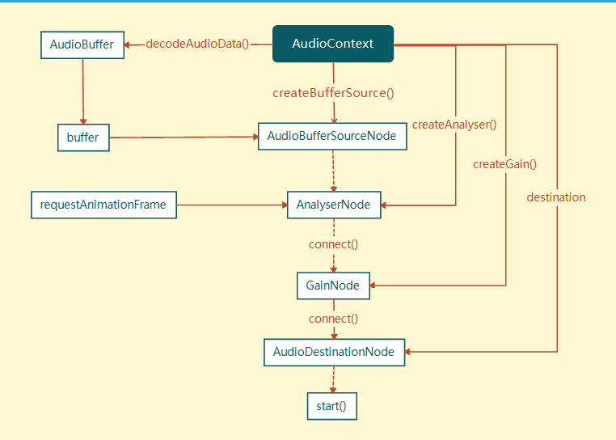

Let me walk through the process of implementing music visualization with HTML5.
Build the static page
The static page structure has three parts: header, left, and right. header uses a semantic tag, while both left and right are implemented with divs.

Something like this is enough. Then change the background color to black, the text to white, optionally add border lines, and give it some padding or margin, and the static page is done.
But the layout is not the main point here. You could put a track list in the left sidebar and switch songs by clicking. To keep things simple, though, I just load a specified song directly in the background. The song is Xu Song’s “Yan Hua Xiao”, and part of the lyrics is shown in the left sidebar.
Create the audio file object
The AudioContext object is used to obtain the audio source.
(Node)
AudioContext: an object that contains variousAudioNodeobjects and their connections. You can think of it as a context object. In most cases, a document only has oneAudioContext.(Method)
createBufferSource(): creates anAudioBufferSourceNodeobject.
It can be written like this:
var ac = new window.AudioContext(); // Instantiate ac as an audio object
var bs = ac.createBufferSource(); // Use bs to hold the audio file resource
Once you have the audio resource, can you play it immediately? Of course not, because the file has not been specified yet. You still need to tell the object which audio file to play.
Get the audio data
After creating the buffer source, you reach the AudioBufferSourceNode node. This node has a property called buffer, which is used to specify the file resource. That property needs data of type buffer.
(Node)
AudioBufferSourceNode: represents a chunk of audio resource in memory. Its audio data is stored inAudioBuffer(itsbufferproperty).(Property)
buffer: anAudioBufferobject that represents the audio resource data to be played.
There are two ways to get a buffer. One is to use AJAX with the response type set to arraybuffer, then decode it. The other is to use FileReader to read the file and get a blob value. The second method is often used after uploading a file through an input, then parsing it. The first method is more convenient.
Native AJAX looks like this:
var url = "...";
var xhr = new XMLHttpRequest();
xhr.abort();
xhr.open("GET", url);
xhr.responseType = "arraybuffer";
xhr.onload = function() {
return xhr.response;
}
xhr.send();
Inside the function triggered by onload, xhr.response is exactly the value we want.
(Method)
decodeAudioData(arrayBuffer, succ(buffer), err): asynchronously decodes the audio data contained inarrayBuffer.
Decode the arraybuffer like this:
ac.decodeAudioData(arraybuffer, function(buffer) { ... }, function(err) { ... });
bs.buffer = buffer; // The buffer in the callback is the one we want
Play the music
(Method)
start: starts playing audio
At this point, call the start method:
bs.start(0);
Open the page, and the music starts playing.
Volume control
(Node)
GainNode: an object that changes audio volume by modifying the signal strength of every sample frame passing through it.(Method)
createGain(): creates aGainNodeobject.(Property)
value: changes the strength of the audio signal. The default is1, and the minimum is0.
Playing music is not enough; you also need a volume control widget. Volume control uses the GainNode node:
var gainNode = accreateGain(); // Create the GainNode object
gainNode.connect(ac.destination); // Connect gainNode to AudioDestinationNode
Now you have an object for volume control.
gainNode.gain.value = ...;
gain.value controls the strength of the input signal, which means the volume. In HTML, use an input with type="range" and pass its value to the object, and you can control the volume in real time.
Get parsed audio data
(Node)
AnalyserNode: an audio analysis object. It can analyze the frequency-domain and time-domain information of audio resources in real time, but it does not process the audio stream itself.(Method)
createAnalyser(): creates anAnalyserNodeobject.
(Property)
fftsize: sets the FFT size (FFT is the fast algorithm for the discrete Fourier transform, used to transform a signal into the frequency domain). It must be a power of 2 between 32 and 2048, with a default of 2048. The number of real-time frequency-domain data points obtained is half offftSize.(Property)
frequencyBinCount: half of the FFT size, which is the number of real-time frequency-domain data points obtained.
(Method)
getByteFrequencyData(Uint8Array): copies the current audio frequency-domain data (of sizefrequencyBinCount) into aUint8Array(an 8-bit unsigned integer typed array).
First create the AnalyserNode object, then set the value of fftsize. FFT is used in digital signal processing. It transforms the input signal of the audio stream into the frequency domain, and getByteFrequencyData() retrieves the processed frequency-domain data.
var analyser = ac.createAnalyser(); // Instantiate the object
analyser.fftSize = 32; // Set fftsize
var arr = new Uint8Array(analyser.frequencyBinCount); // getByteFrequencyData() requires an 8-bit unsigned integer typed array
analyser.getByteFrequencyData(arr); // arr is the desired frequency-domain data
The resulting array arr is the data used to draw the visualization effect.
(Method)
window.requestAnimationFrame(): tells the browser that you want to perform an animation and asks it to call the specified function before the next repaint to update the animation. The callback is executed before the repaint.
A single analysis only yields one set of data, so you need requestAnimationFrame to keep analyzing continuously and keep producing arr.
Draw the front-end interface
The front-end interface is drawn with canvas to achieve the music visualization effect.
var box = document.getElementById("right"); // Get the DOM for the right area
box.appendChild(canvas); // Create the canvas node
var ctx = canvas.getContext("2d"); // Instantiate the canvas context
Next comes using a for loop and ctx to draw rectangles and circles, then fill them with gradients.
Here is the relationship between the Web Audio API pieces used in this example:

The dotted line marks nodes that can be skipped so the audio file can be played directly. Well, that diagram has an error.